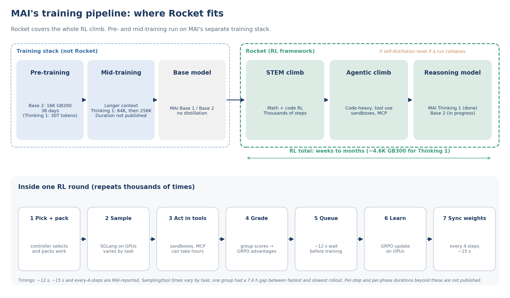
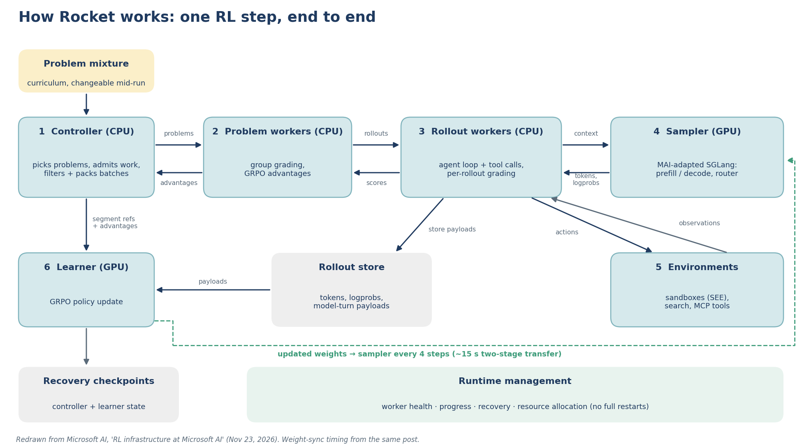
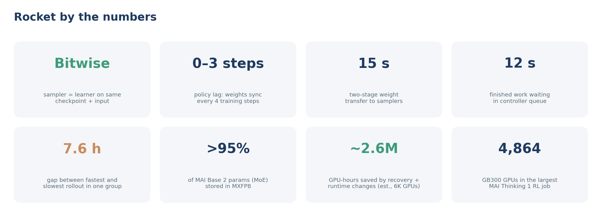

What is new in MAI’s reinforcement learning system, with hard data, and how it compares with Meta, Google DeepMind, OpenAI and Anthropic
Summary. RL is often a short polish at the end of training. MAI uses RL to climb from a base model, with no distillation from other labs’ models. Rocket, MAI’s in-house RL system, is built for that harder case. It keeps the sampler and learner in exact (bitwise) agreement, holds policy lag to 0–3 steps, and recovers from failures without restarting the job. MAI estimates recovery and runtime changes saved about 2.6 million GPU-hours in part of a run.
1. Why long RL climbs need different infrastructure
A model distilled from a stronger teacher starts RL near its ceiling, so RL is short and a failed run can simply be restarted. MAI climbs from base capabilities through RL itself. Over thousands of updates, three problems that are minor in short runs become the main design constraints:
- Staleness: agentic rollouts can take hours while the learner keeps updating. GRPO scores each attempt against others for the same problem, so one slow attempt holds back its whole group.
- Numerical drift: the sampler and learner use different precision, kernels and parallelism. Small disagreements compound and can destabilize training.
- Failures and change: hardware fails on long runs, and the best data mix and GPU split shift as the model improves. Restarting for each event wastes GPU time.
Which phases Rocket covers
| Phase | Done by | What happens | Published time and scale |
|---|---|---|---|
| Pre-training | MAI's training stack, not Rocket | The base model learns from raw data | MAI Base 2: 16K GB200 GPUs for 38 days. MAI Thinking 1: 30T tokens on 8,192 GB200s |
| Mid-training | Training stack, not Rocket | The model is extended to longer inputs: 64K, then 256K tokens | 8,192 and 4,096 GB200s. |
| STEM climb | Rocket | RL on math and code problems | Part of the RL total |
| Agentic climb | Rocket | Code-heavy RL using tools and sandboxes | Part of the RL total |
| Collapse recovery | Rocket | If a run collapses, it resets from MAI's own earlier checkpoint (self-distillation) | As needed. This happened less often as Rocket improved |

2. Inside Rocket
Rocket splits RL into six roles that run in parallel. CPU workers handle problems, agent loops and grading; GPUs handle sampling and learning. It runs on Kubernetes or Slurm with Ray actors, a GRPO learner and an MAI-adapted SGLang sampler, with sandboxes, search and MCP tool servers as environments.

Two design choices stand out. Work moves as references, not copies: large token payloads sit in a shared rollout store and the learner pulls them when needed. And the controller and learner both save recovery checkpoints, so the system can rebuild after a fault instead of starting over.

3. What is novel: three problems, three answers
| Challenge | Rocket’s answer | Hard data (MAI-reported) |
|---|---|---|
| Staleness | Drops failed rollouts instead of retrying, so one bad attempt cannot stall its group. Syncs weights to samplers often with a two-stage transfer. Gives the learner spare GPUs so the job is limited by inference, not training. |
Policy lag 0–3 steps (sync every 4 steps) Weight transfer ~15 s Finished work waits ~12 s before training Seen in practice: a 7.6 h gap inside one rollout group |
| Numerical consistency | Matches sampler and learner computation exactly. For MAI Base 2, stores MoE weights in MXFP8 to save memory but multiplies in BF16, because MXFP8 math caused larger log-prob gaps. |
Bitwise parity on identical checkpoints and inputs, with no noticeable speed cost >95% of parameters (MoE) stored in MXFP8 |
| Fault tolerance and elasticity | Recovery checkpoints for controller and learner state; runtime management tracks worker health and reallocates resources; the data mix can change mid-run. |
~2.595M GPU-hours saved in part of RL training (estimate, 6,000 GPUs) NVL64 racks: 8 spare GPUs per 72-GPU rack for fast swaps |
Proof it works: Rocket post-trained MAI Base 1 into MAI Thinking 1 on about 4,600 GB300 GPUs (largest job 4,864), with rollouts up to 128K tokens. The result scored 97.0% on AIME 2025, 87.7% on LiveCodeBench v6 and 52.8% on SWE-Bench Pro. MAI reports that collapses needing a reset became less frequent as Rocket improved. Rocket now post-trains MAI Base 2 (2.8T total, 80B active parameters).
4. How the top labs compare
Based on public papers and posts as of November 26, 2026. "Not disclosed" means no public detail was found.
| Lab / system | Design | Staleness and async | Sampler–learner numerics | Fault tolerance | Published hard data |
|---|---|---|---|---|---|
| MAI — Rocket | Six-role split: CPU controller, problem and rollout workers; GPU sampler (adapted SGLang) and learner; shared rollout store. Kubernetes/Slurm + Ray. | Async; weights every 4 steps (lag 0–3); ~15 s sync; failed rollouts dropped to unblock GRPO groups. | Bitwise parity on same checkpoint and input; MXFP8 storage with BF16 math for MoE. | Controller + learner recovery checkpoints; live reallocation and data-mix changes; spare GPUs per rack. | ~2.595M GPU-hours saved (est.); 4,864 GB300 RL job; 128K rollouts; months-long climbs from base model. |
| Meta — LlamaRL | Single-controller design in native PyTorch, no Ray; separate executors for generation, reward and training. | Async off-policy training; distributed direct memory access for weight sync. | Generators in FP8/FP4, trainers in BF16; no parity claim found. | Not disclosed | Up to 10.7× faster RL steps vs DeepSpeed-Chat-style systems on a 405B model; 8B–405B on thousands of H100s. |
| Google DeepMind — Pathways | Single-controller runtime that trains and serves Gemini on TPUs; supports multi-program RL loops. | Not disclosed for Gemini RL. | Not disclosed. | Elastic fault tolerance in the runtime. | Over 130M TPU chip-hours run on Cloud Pathways in 90 days; no Gemini RL run metrics found. |
| OpenAI | Not disclosed. States that scaling general-purpose RL drives o-series gains. | Not disclosed. | Not disclosed. | Focus on securing training sandboxes (containment, isolation). | No RL infrastructure metrics found. |
| Anthropic | Not disclosed. Trains on AWS Trainium, Google TPUs and NVIDIA GPUs. | Not disclosed. | Not disclosed. | Not disclosed. | Over 1M Trainium2 chips used to train and serve Claude; no RL infrastructure metrics found. |
| Open source — verl, slime, Laminar | Shared foundations MAI builds on conceptually; Laminar fully decouples rollout, buffer, training and weight relay. | Laminar: trajectory-level async, relay workers for weight sync. | Varies; FP8/MXFP8 RL recipes emerging. | Laminar isolates failures between parts. | Laminar: up to 5.48× throughput on 1,024 GPUs. |
Where MAI stands out: Meta and the open-source community publish fast async designs, and Google has a strong general runtime. MAI is the only top lab here that has published end-to-end RL system numbers for long climbs together: weight-sync time, policy lag, bitwise numerical parity and GPU-hours saved by recovery. OpenAI and Anthropic have not shared comparable detail.
5. Why it matters
- Steady climbs: exact numerics and low staleness keep thousands of updates pointed the right way.
- Less waste: recovery without restarts turns failures into short pauses, not lost days.
- Self-sufficiency: reaching the frontier through RL, without distilling other labs’ models, depends on infrastructure that can sustain the climb.
Sources
- Microsoft AI, RL infrastructure at Microsoft AI (Nov 23, 2026)
- Microsoft AI, MAI-Thinking-1: Building a Hill-Climbing Machine (technical report)
- Microsoft AI, Frontier Pre-training at Microsoft AI (Oct 15, 2026)
- V. Zhong, The Training and RL Infrastructure Behind MAI-Thinking-1 (Oct 2026), summary of the report’s systems sections
- ByteWoops and Magica coverage of the Rocket post (Nov 23–24, 2026), for weight-sync, parity and GPU-hour figures
- Meta, LlamaRL (arXiv:2505.24034)
- Google Cloud, Cloud Pathways GA (Nov 9, 2026)
- OpenAI, Competitive Programming with Large Reasoning Models (arXiv:2502.06807); Securing our frontier model training environment (Oct 23, 2026)
- Anthropic, Anthropic and Amazon expand compute collaboration (Apr 20, 2026)
- Sheng et al., Laminar (arXiv:2510.12633)
All MAI figures are MAI-reported. The 2.595M GPU-hour figure is MAI’s own estimate for part of an RL run, assuming 6,000 GPUs.